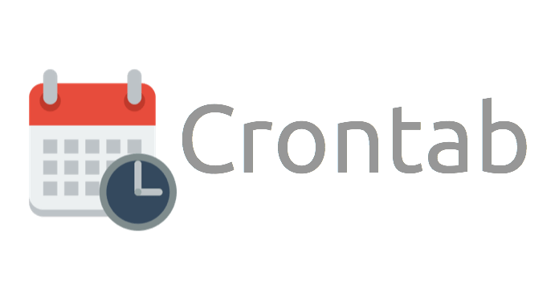

Framework para Serviços de Aprendizado de Máquina
Pedro Hollanda Boueke
Projeto de Graduaçãao apresentado ao Curso
de Engenharia de Computação e Informação
da Escola Politécnica, Universidade Federal
do Rio de Janeiro, como parte dos requisitos
necessários à obtenção do título de Engenheiro.
Orientador: Flávio Luis de Mello
Rio de Janeiro
Março de 2019
1
Tema
Uma plataforma para serviços
de Aprendizado de Máquina.
2
Justificativa
-
Alta demanda
-
Menor foco acadêmico
3
Objetivos
-
Aplicação web:
-
escalonamento da execução de modelos
-
visualização dos resultados e eventos do sistema
-
execução de modelos em tempo real
-
coleta e persistência de dados
-
configurável
-
Base de dados relacional para armazenamento de eventos
-
Programa para execução de modelos de aprendizado de máquina
4
Sistemas de Aprendizado de Máquina em Ambiente de Produção
5
Agendadores de Tarefas


6
Desenvolvimento com Django e AWS
9
View

10
Datalake
Gerência a conexão com o Datalake
11
Showroom

13
Disparo

14
Monitor

15
Urls

16
Implantação
-
Código fonte no Github
-
Servidor na AWS
-
Banco hospedado na mesma máquina
17
Configuração do ambiente

README.md
18
Inicialização da aplicação
$ python manage.py runserver 0.0.0.0:<porta>
19
Conclusão
Com todos os pontos objetivados alcançados, tem-se o sucesso da proposta e da implementação
da proposta.
20
Trabalhos Futuros
-
View encarregada de gerenciar as configurações
-
Permitir vários modelos e cargas de trabalho
-
Web API para a execução de modelos sob demanda